画像をクリックすると詳細が表示されます
ケンバン族の襲来
場面スチール
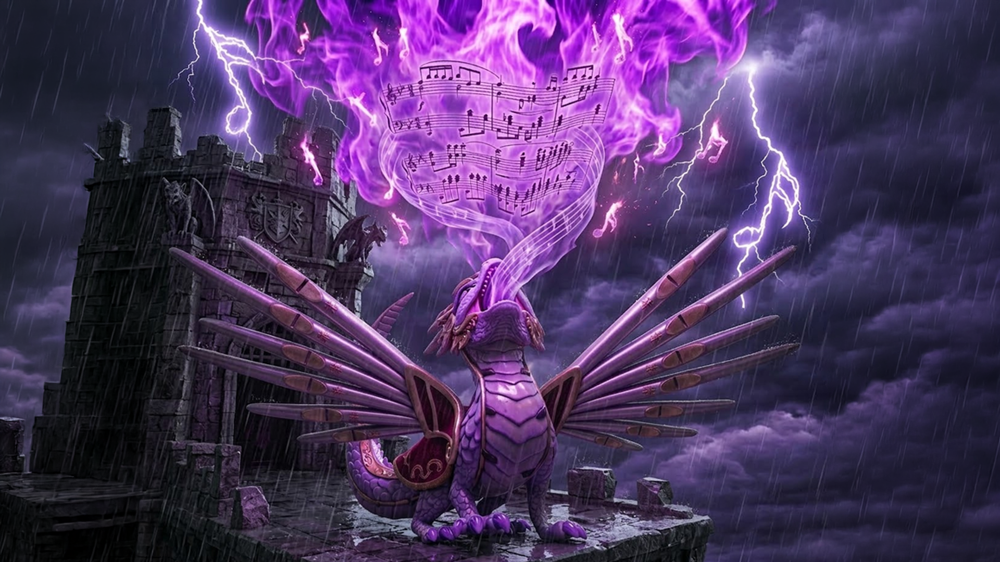
パイプオルガン魔女の城
場面スチール
絶えない喧嘩
場面スチール
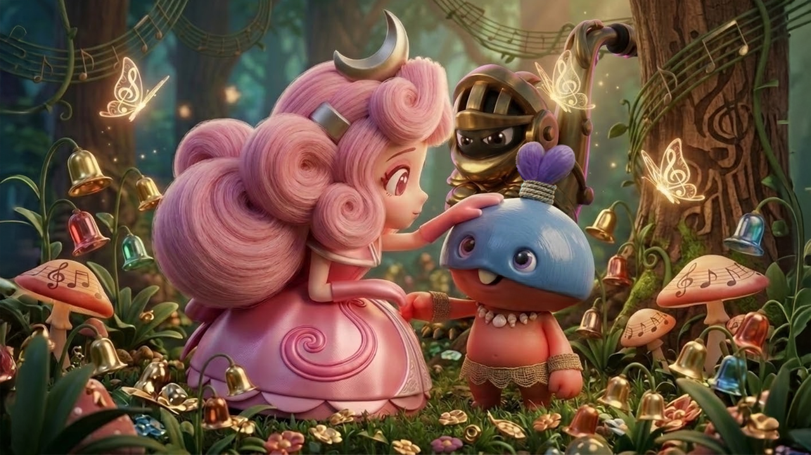
カスタネット坊やとの出会い
場面スチール
ダ族の村
場面スチール
パイプオルガン魔女の玉座
場面スチール
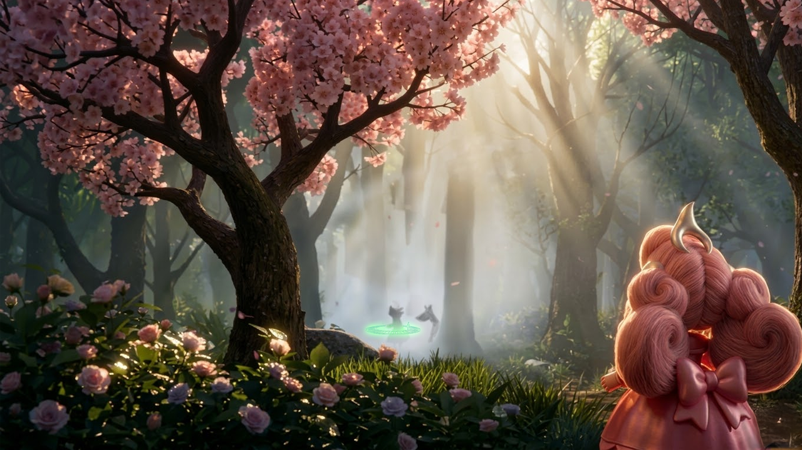
ピアノ王子との出会い
場面スチール
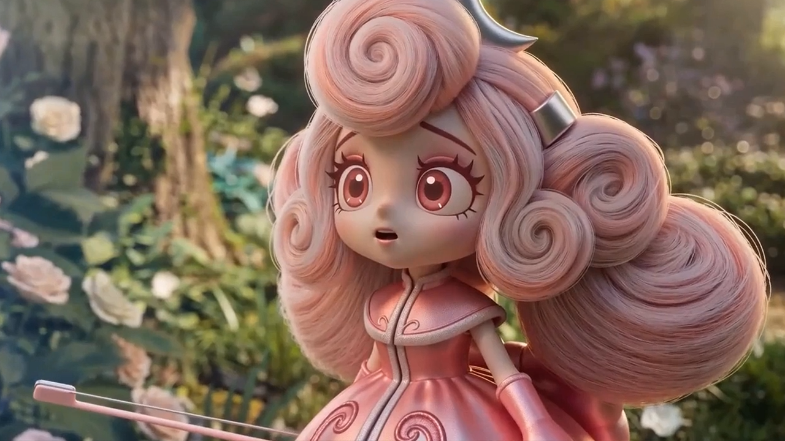
一目惚れ
場面スチール
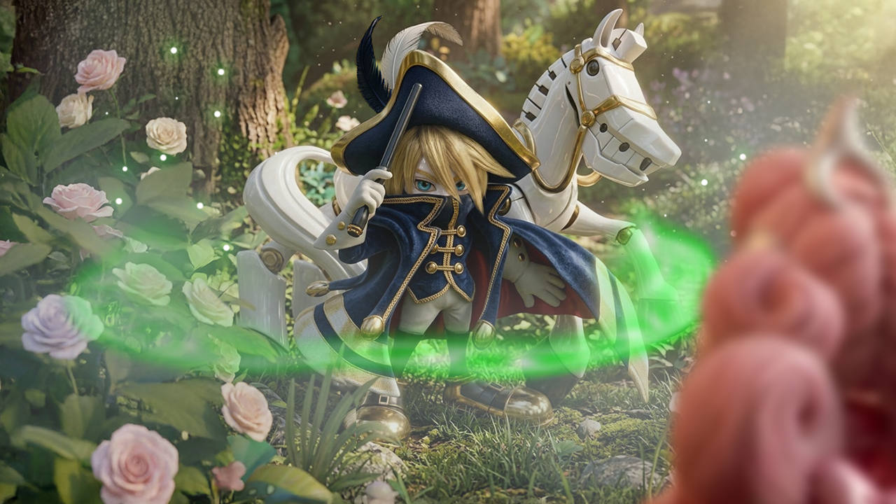
ケンバンガク国の王子
場面スチール

マスタータクトの家
場面スチール
初めての調和
場面スチール
カンガク族の訪問
場面スチール
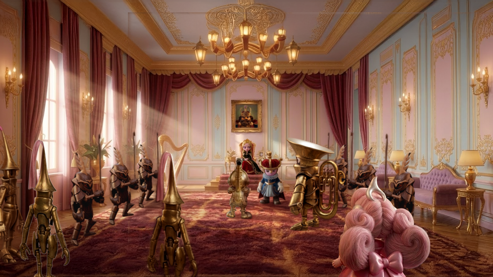
女王の間（謁見）
場面スチール
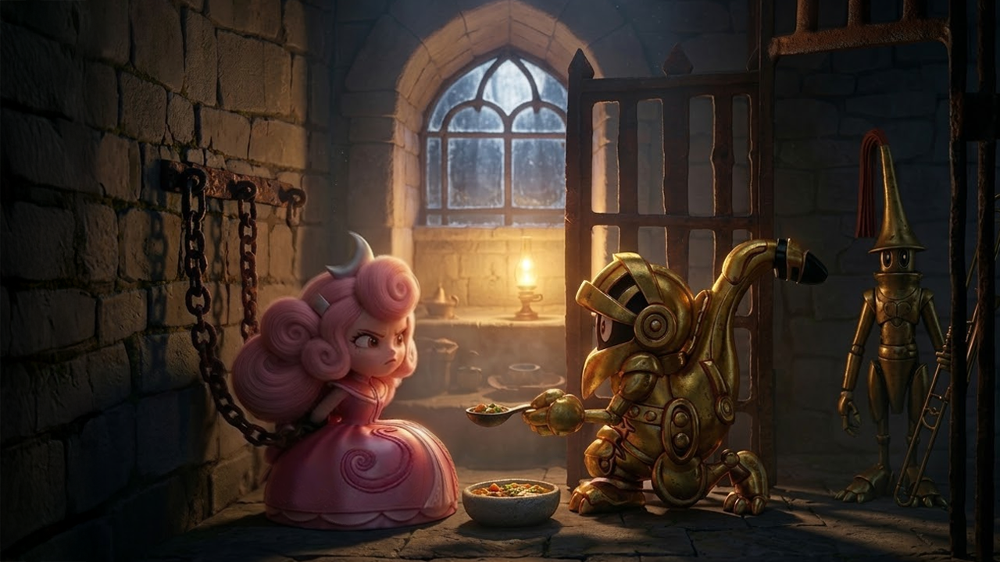
拘束された姫
場面スチール
姫と騎士
場面スチール
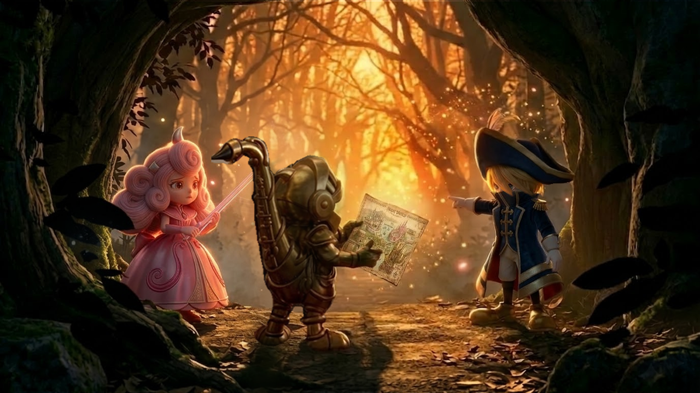
旅立ち
場面スチール
木琴兄妹との出会い
場面スチール
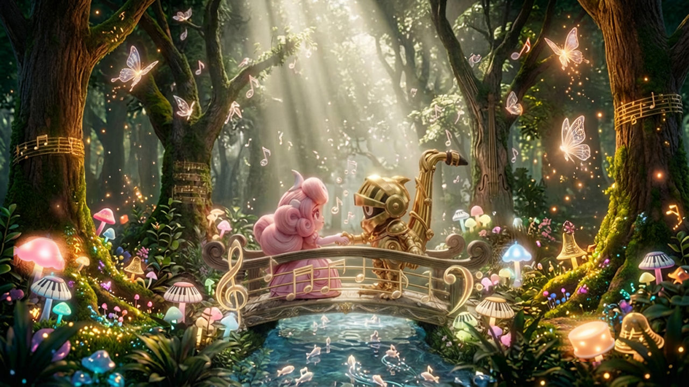
結束の握手
場面スチール
鼓動神殿
場面スチール
高難度試練
アートワーク
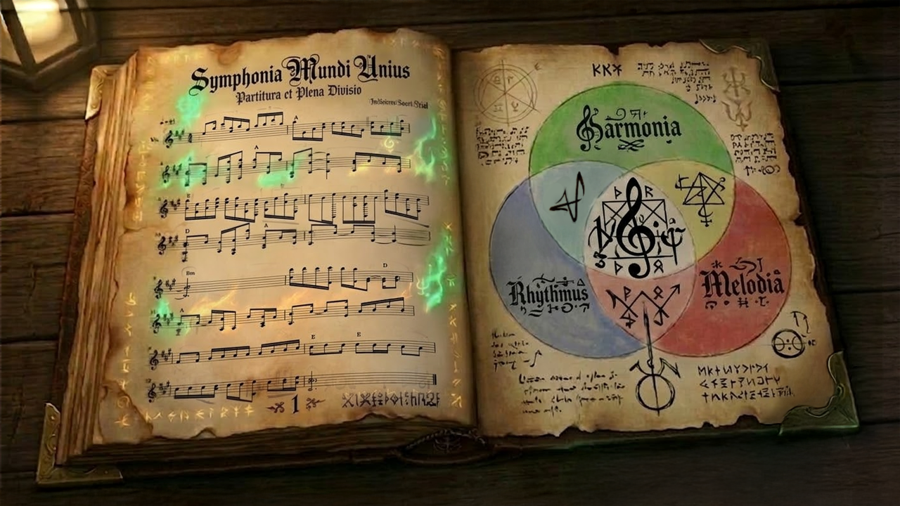
魔法の楽譜
アートワーク
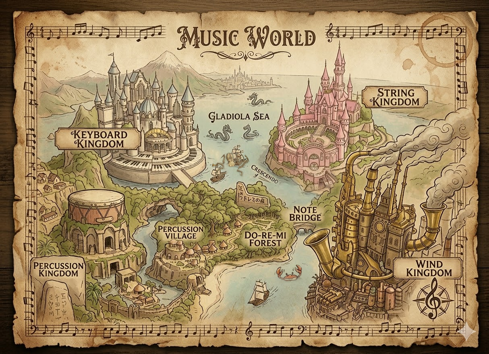
ミュージックワールドマップ
設定資料
タイトルロゴ
設定資料
オーケストラ国のロゴ
設定資料
♦
🎬
素材の利用について
ギャラリーの画像・映像は、SNSやブログへの転載・拡散を歓迎します。ご利用の際は出典として「Music World Official」を明記いただけると嬉しいです。
取材・メディア掲載・商用利用など、用途や媒体が特定される場合は、事前にご一報ください。高解像度素材やプレスキットもご用意できます。
お問い合わせ・取材のご依頼はいつでもお待ちしております。